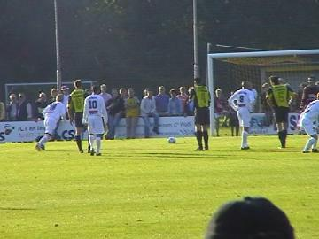
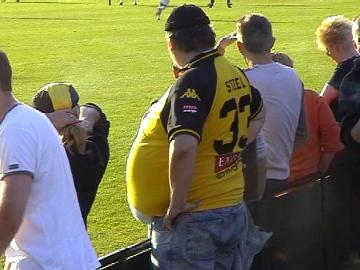

|
SV Meerssen - Roda JC (0-4) 6 augustus 2002 |

In deze drukbezochte Amstelcupwedstrijd in sportpark
Marsania krijgt Roda al vroeg een strafschop die
genomen wordt door "de heer" Berglund. 0-1.

Rechtsback stond nummer 33, Steel.
Het wordt 0-2 door "de heer" Christiano.
En 0-3 door "de speler" Berglund.
Sonkaya in duel.
Nog voor het verstrijken van de eerste helft verlaten
een aantal toeschouwers het sportpark.
De heer PRKSTD showt zijn mooie pin.
De overdekte staantribune.
In de tweede helft ging Roda freewheelen. Toen het
gerucht rondging dat er auto's werden gesloopt, werd
het opeens gezellig druk in de straten van Meerssen.
Berglund die heel beheerst 0-4 scoorde wordt hier
gewisseld voor Anastasiou.
© Koempels
Pleasure Dome